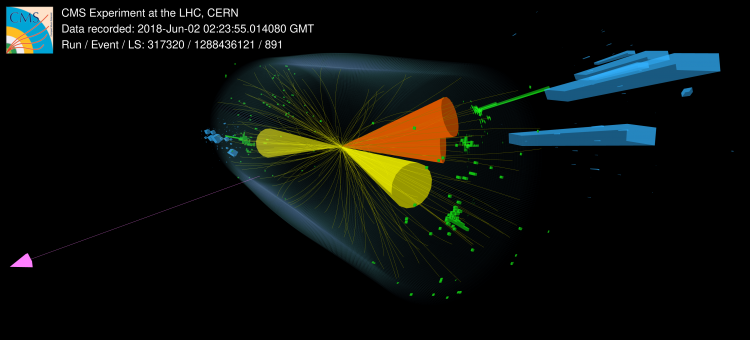

Precise studies of the Higgs boson’s interactions with the known matter and force particles are essential to reveal the microscopic deviations from the SM prediction. One of such interactions is Yukawa couplings of the Higgs boson and fermions. The H→ττ decay is the most sensitive fermionic decay mode that allows direct probing of this interaction. During my work on the CMS experiment, I have actively contributed to the measurements of the Higgs boson properties by observing its decay to a pair of tau leptons and testing evidence of non-SM interactions in the Higgs production using data taken during LHC Run 2.
 The H→ττ decay is characterized by multiple final states due to decays of tau leptons. I am responsible for delivering measurements with double hadronic channel(τhτh) which is one of two dominant contributors (besides τμτh) to the combined measurement from four distinct channels (τhτh, τμτh, τeτh, and τeτμ). Above figure is the event display of a 13 TeV proton-proton collision in the CMS detector during 2018 producing signal of intrest. The event is characterized by the productino of a pair of forward-backward jets(two yellow cones). Each tau lapton decays to a charged hadron and a neutrino. The tau jets(orange cons) in this event are identified by having a single track and a corresponding deposit in the Electromagnetic(green towers) and Hadronic(blue towers) calorimeters system. You can read more about the H→ττ analysis from CMS public briefing written by me! View the interactive event display on this separate page.